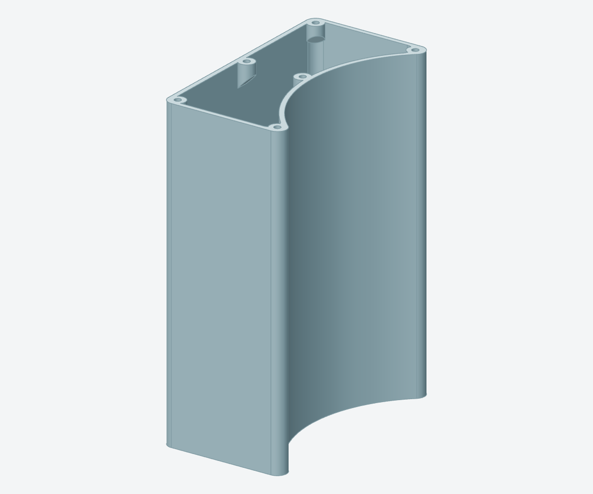
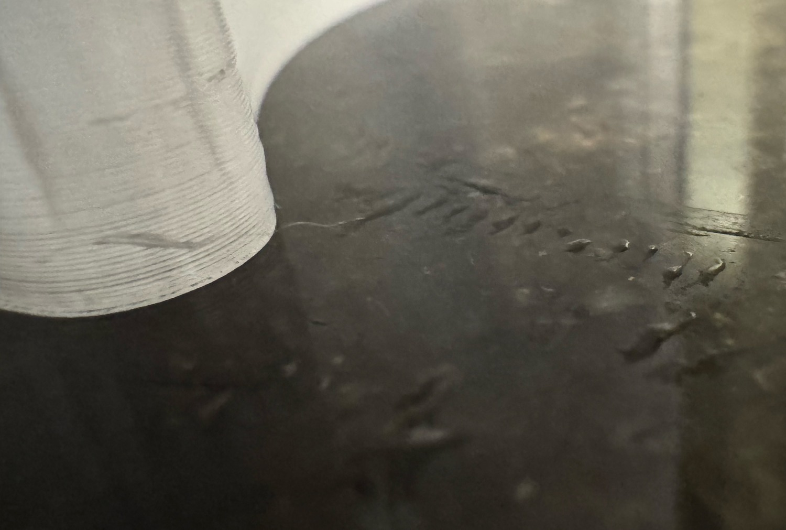

CLEAR PETG AND PETG BASIC
Reservoirs, lids and small parts
Keep the reservoir wall and floor together in the native slice. Verify water hold on the identified article.


| Left Standard-flow nozzle | {{petg:/nozzle_diameter/0}} mm |
|---|---|
| Nozzle, first / ordinary | {{petg:/nozzle_temperature_initial_layer/0}} / {{petg:/nozzle_temperature/0}} °C |
| Glued Engineering Plate | {{petg:/eng_plate_temp/0}} °C |
| First / ordinary layers | {{petg:/initial_layer_print_height}} / {{petg:/layer_height}} mm |
| Arachne walls | {{petg:/wall_loops}} |
| Flow / wall overlap | {{petg:/filament_flow_ratio/0}} / {{petg:/infill_wall_overlap}} |
| Ironing | Off |
Read the floor joint
Check where solid floor fill meets the wall. The selected wall count keeps the thick curved corners in wall paths.
Reservoir lids
Check that the port cores stay open. Countersinks carry themselves, and screw seats bridge their bores. Separate TPU grips receive the tubes.
PETG Basic
The PRV shroud prints cavity-up. The reed bridge prints on its convex face with the lead groove bridged.
The identified left body held water at the time of Derek’s check.
Reservoir and lid recipes · Full body settings · Left water-hold result · Leak record · Ironing comparison · PETG Basic part recipes